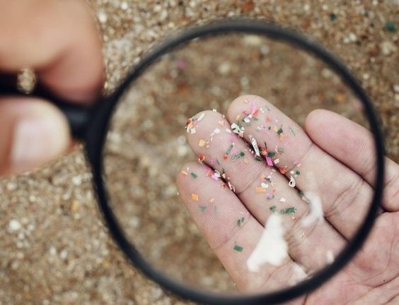

Mikroplastik
Mikroplastiklar nima? Tasavvur qiling, bir plastik idishni shu qadar mayda bo’laklarga bo’ldingizki, bu bo’laklarni faqatgina mikroskop yordamida ko'rish mumkin. Ana shu mayda bo'laklar mikroplastiklar deyiladi.
 Ularning uzunligi 5 millimetrdan kichik bo'lib, kunjut donasining o'lchamida yoki undan ham kichikroqdir. Ular qanday qilib hamma joyga tarqaladi? Mikroplastiklar katta plastik buyumlarning parchalanishidan kelib chiqishi mumkin, masalan, plastik paket bo'laklarga bo'linib ketganda. Shuningdek, yuz yuvish va tish pastalari kabi mahsulotlar ham mikroplastik granulalariga ega. Hatto sintetik kiyimlarni yuvish ham mikroplastiklarni suvga chiqaradi! Atrof-muhitga zarari 1. Daryolar va Okeanlar: Mikroplastiklar suvda suzib yurib, daryolar, ko‘llar va okeanlarga tarqalib ketadi. Bu esa baliqlar va boshqa dengiz jonivorlari ularni oziq deb, adashtirib yeb qo‘yishi va plastik hazm bo‘lmay, ularning organizmda qolib ketishiga olib keladi. 2. Tuproq va O‘simliklar: Mikroplastiklar tuproqqa tushganda, tuproq va o‘simliklarga zarar yetkazishi mumkin. Ular suvning tuproq orqali osimlikka o‘tish jarayoniga ta’sir qilishi va o‘simlik ildizlariga zarar yetkazishi mumkin. 3. Yovvoyi tabiat: Hayvonlar mikroplastiklarni oziq deb adashtirib, yeb qo‘yishi mumkin. Mikroplastiklar oshqozoniga tushgan mayda baliqlar bilan katta baliqlar oziqlanadi, keyin esa bu baliqlarni qushlar va odamlar iste’mol qilishadi. Bu ularning sog‘lig‘iga zarar yetkazishi va oqibatda oziq zanjirining buzilishiga olib keladi. Odamlarga zarar 1. Oziq-ovqat va suv: Mikroplastiklar biz iste'mol qiladigan oziq-ovqat va ichimlik suvida ham uchraydi. Ularni dengiz mahsulotlarida, tuzda, asalda va hatto qadoqlangan suvlarda topish mumkin. 2. Salomatlik xavflari: Hozirgi kunda, olimlar mikroplastiklarning inson salomatligiga qanday ta'sir ko’rsatishini hali o'rganishmoqda, ammo bu kichik zarrachalar toksik kimyoviy moddalarni o’zlarida saqlashi allaqachon aniqlangan. Bu kimyoviy moddalar bizning organlarimizga zarar yetkazishi va vaqt o'tishi bilan kasalliklarni keltirib chiqarishi mumkin. Biz nima qila olamiz? • Plastik ishlatishni kamaytirish: Qayta foydalanish mumkin bo'lgan xaltalar va idishlardan foydalaning. • Tabiiy mahsulotlarni tanlash: Ayrim yuz yuvish vositalari kabi plastik granulali mahsulotlardan saqlaning. • Tozalash ishlarini qo'llab-quvvatlash: Sohil va daryo tozalash ishlarida ishtirok eting yoki shu kabi faoliyatlarni qo'llab-quvvatlang. • Ma'lumot tarqatish: Boshqalarga mikroplastiklarning ta'siri haqida bilim bering. Kichik qadamlar orqali biz sayyoramizni tozaroq va barcha jonivorlar uchun sog'lomroq qilishimiz mumkin!